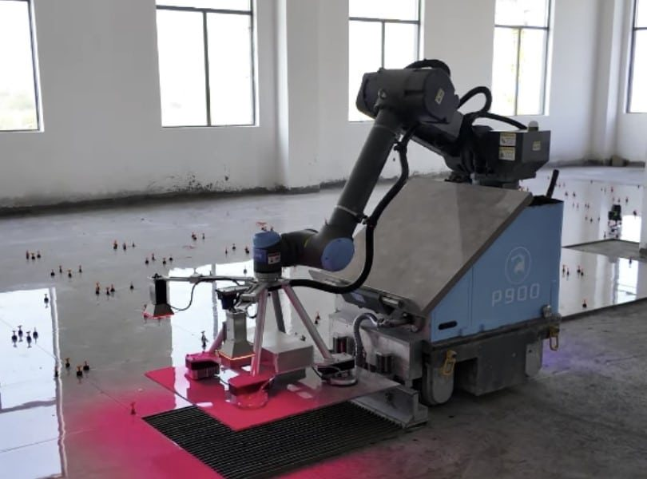
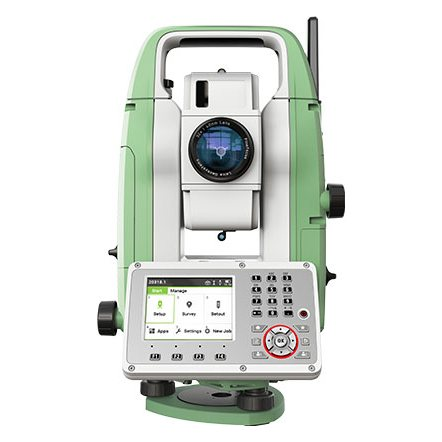
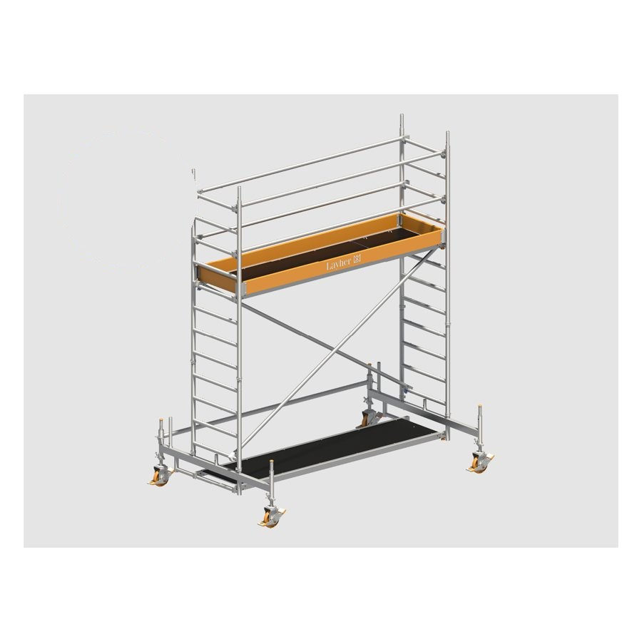
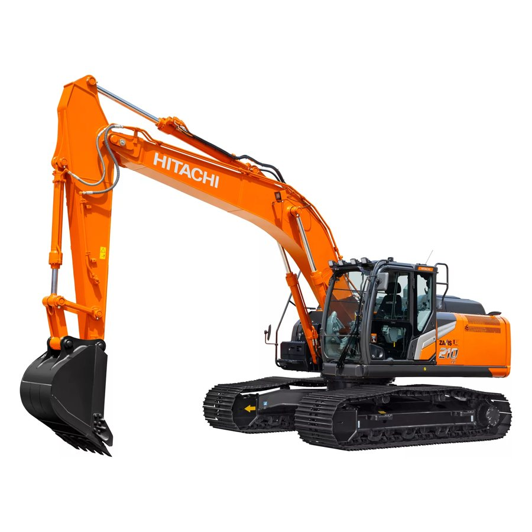
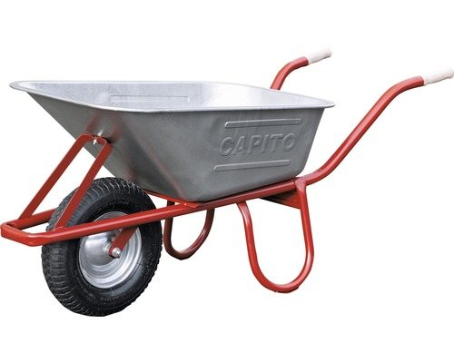
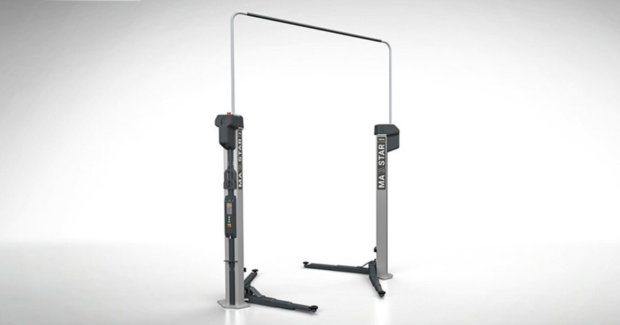

AE Global Traders · 中国采购
产品类别
建筑用品

01个人防护装备（PPE）86 产品 · 39 制造商

02呼吸防护17 产品 · 7 制造商

03工作服31 产品 · 18 制造商

04有害物质清除（石棉 / 人造矿物纤维）26 产品 · 17 制造商

05耗材与辅材26 产品 · 12 制造商

06手工工具37 产品 · 9 制造商

07电动工具28 产品 · 11 制造商

08拆除与凿破设备24 产品 · 8 制造商

09拆除机器人与拆除属具26 产品 · 9 制造商

10建筑机器人17 产品 · 9 制造商

11切割、研磨与铣削设备20 产品 · 5 制造商

12混凝土、地面与装修施工设备30 产品 · 18 制造商

13测量与检测21 产品 · 14 制造商

14工地供电与照明27 产品 · 6 制造商

15能源设备21 产品 · 14 制造商

16空调、取暖与水泵21 产品 · 7 制造商

17登高作业与通道设备24 产品 · 12 制造商

18工程机械33 产品 · 17 制造商

19运输与物流 / 物料搬运22 产品 · 10 制造商

20车间与车辆设备21 产品 · 9 制造商

21通信设备19 产品 · 16 制造商